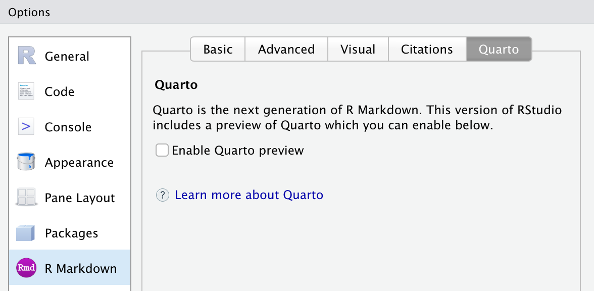
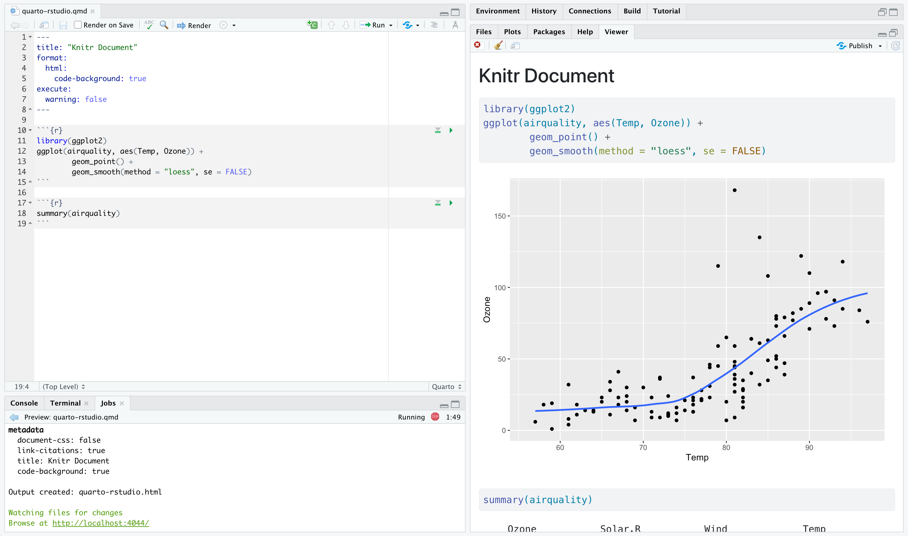

RStudio IDE
Use RStudio to work with Quarto documents that use either the Knitr or Jupyter engine.
Overview
The latest release of RStudio (v2022.02) includes support for editing and preview of Quarto documents.
If you are using Quarto within RStudio it is strongly recommended that you use this version (the documentation below assumes you are using this build).
You can download RStudio v2022.02 from https://rstudio.com/products/rstudio/download/.

If you have already installed the Quarto CLI then RStudio will detect this and enable Quarto features automatically. Alternatively, there is a version of Quarto built-in to RStudio that you can activate from R Markdown Preferences.
Creating Documents
Use the File : New File : Quarto Document… command to create new Quarto documents:

Render and Preview
Use the Render button to preview documents as you edit them:

If you prefer to automatically render whenever you save you can check the Render on Save option on the editor toolbar.
The preview will appear alongside the editor:

The preview will update whenever you re-render the document. Side-by-side preview works for both HTML and PDF output.
Projects
If you want to create a new project for a Quarto document or set of documents, use the File : New Project… command, specify New Directory, then choose Quarto Project:
![A section of the 'New Project Wizard' menu from Rstudio. This section is titled 'Create Quarto Project'. The Quarto logo is displayed on the left. ON the right are fields for 'Type', 'Directory name', and 'Create project as subdirectory of:'. Underneath that are options for 'Engine', 'Create a git repository', and 'Use renv with this project'. The option for 'Engine' is set to 'Knitr'. There are buttons for 'Create Project' and 'Cancel' arranged side-by-side in the bottom right of the window. There is an option to 'Open in new session' in the button left corner.](../../docs/tools/images/rstudio-new-knitr-project.png)
You can use this UI to create both vanilla projects as well as websites and books. Options are also provided for creating a git repository and initializing an renv environment for the project.
Knitr Engine
Quarto is designed to be highly compatible with existing R Markdown documents. You should generally be able to use Quarto to render any existing Rmd document without changes.
One important difference between R Markdown documents and Quarto documents is that in Quarto chunk options are typically included in special comments at the top of code chunks rather than within the line that begins the chunk. For example:
```{r}
#| echo: false
#| fig-cap: "Air Quality"
library(ggplot2)
ggplot(airquality, aes(Temp, Ozone)) +
geom_point() +
geom_smooth(method = "loess", se = FALSE)
```Quarto uses this approach to both better accommodate longer options like fig-cap, fig-subcap, and fig-alt as well as to make it straightforward to edit chunk options within more structured editors that don’t have an easy way to edit chunk metadata (e.g. most traditional notebook UIs).
Note that if you prefer it is still possible to include chunk options on the first line (e.g. ```{r, echo = FALSE}). That said, we recommend using the comment-based syntax to make documents more portable and consistent across execution engines.
Chunk options included this way use YAML syntax rather than R syntax for consistency with options provided in YAML front matter. You can still however use R code for option values by prefacing them with !expr. For example:
#| fig-cap: !expr paste("Air", "Quality")Jupyter Engine
You can also work with Quarto markdown documents that target the Jupyter engine within RStudio. These files will typically include a jupyter option in the YAML front matter indicating which kernel to use. For example:
---
title: "Matplotlib Demo"
author: "Norah Smith"
jupyter: python3
---If you want to work within a virtual environment (venv), use the File : New Project… command, specify the Jupyter engine with a venv, and specify which packages you’d like to seed the venv with:
![A section of the 'New Project Wizard' menu from Rstudio. This section is titled 'Create Quarto Project'. The Quarto logo is displayed on the left. ON the right are fields for 'Type', 'Directory name', and 'Create project as subdirectory of:'. Underneath that are options for 'Engine' and 'Kernel'. The option for 'Engine' is set to 'Jupyter,' and the option for 'Kernel' is set to 'Python 3'. Underneath these are options for 'Create a git repository', and 'Use venv with this project'. The button for 'Use venv...' is selected, and there is a text box to the right with the Python package names 'matplotlib' and 'pandas' filled in. There are buttons for 'Create Project' and 'Cancel' arranged side-by-side in the bottom right of the window. There is an option to 'Open in new session' in the button left corner.](images/rstudio-new-project.png)
RStudio will automatically activate this virtual environment whenever you open the project. You can install additional Python packages into the environment using the RStudio Terminal tab. For example:

R Package
If you are not using RStudio and/or you prefer to render from the R console, you can do so using the quarto R package. To install the R package:
install.packages("quarto")Then, to render a document:
library(quarto)
quarto_render("document.qmd")To live preview (automatically render & refresh the browser on save) for a document you are working on, use the quarto_preview() function:
library(quarto)
quarto_preview("document.qmd")If you are working on a website or book project, you can also use quarto_preview() on a project directory:
library(quarto)
quarto_preview()